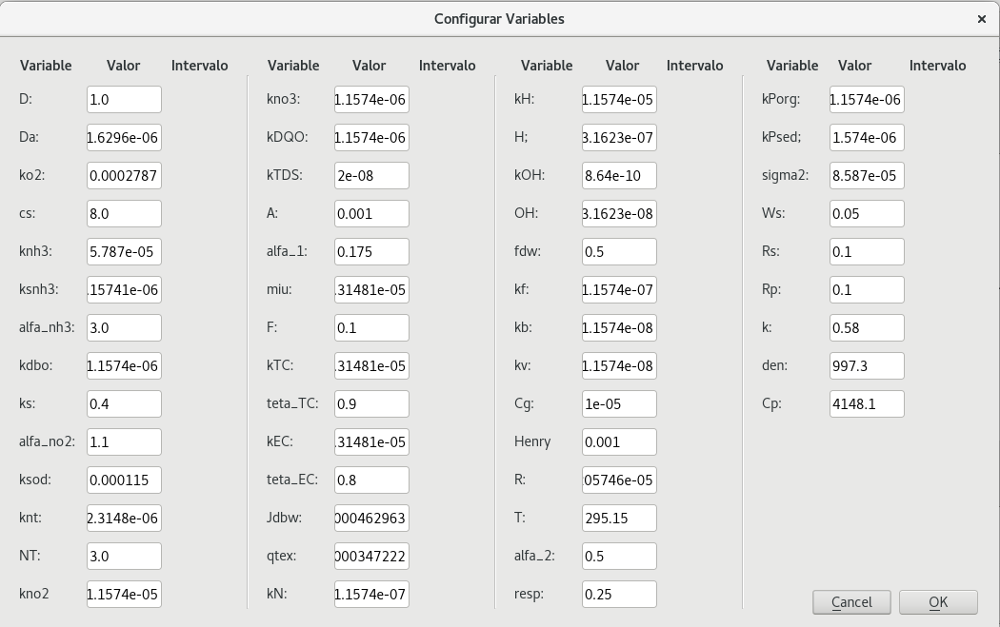

Manual de usuario¶
Calidad-CAR es una herramienta para modelar matemáticamente la calidad del agua en los ríos. Esta herramienta asume que el usuario tiene los resultados del modelado del movimiento del agua con la herramienta Hec-Ras.
Una vez instalado el plugin CalidadCAR, el usuario podrá ver la siguiente barra de herramientas:

La cual contiene los siguientes procedimientos que el usuario podrá realizar:
Cargar fondos¶
Con esta acción el usuario puede cargar las capas que contienen la información necesaria para que se pueda aplicar el modelo matemático. Para poder realizar esta operación el usuario tendrá que hacer click en el icono resaltado que se ve en la siguiente imagen.
La cual desplegará el siguiente dialogo en el que el usuario podrá buscar los diferentes archivos en su sistema de archivos, para cargar las capas.

Una vez seleccionadas todas las capas que el usuario deseé cargar, se desplegarán los diálogos correspondientes para solicitar el sistema de coordenadas de cada una de las capas que se van a cargar.

Una vez seleccionado el sistema de coordenadas de las capas que se van a cargar, estas se podrán visualizar en el canvas de QGIS, como se ve en la siguiente imagen, para visualizar directamente la capa de secciones, el usuario podrá hacer click en el icono resaltado en la siguiente imagen:

En la siguiente imagen se puede ver el canvas de QGIS una vez el usuario ha realizado un acercamiento a la capa de secciones:

Crear el archivo de entrada¶
Este procedimiento consiste en crear un archivo de Excel (.xls) con una plantilla determinada, en el cuál el usuario podrá ingresar la información necesaria para poder realizar el modelado matemático de la información.
El usuario podrá realizar este procedimiento haciendo click en el icono resaltado en la siguiente imagen:

En la siguiente imagen se puede ver el dialogo que le pedirá al usuario la información necesaria para generar el archivo de Excel.

Nota
El dato del tiempo, y la ruta del archivo que se va a crear son los únicos datos requeridos en el diálogo de Crear el archivo de entrada.
Nota
Este proceso se puede realizar únicamente si se ha cargado la capa de ejes y la capa de secciones.
Cálcular¶
Una vez el usuario tiene el archivo de Excel con el formato correcto, y con la información, el usuario podrá realizar este proceso haciendo click en el icono resaltado en la siguiente imagen:
En este diálogo el usuario tiene que buscar el archivo de Excel que contiene la información, seleccionar la carpeta en la que quiere que se guarden los archivos de salida, y por lo menos una de las dos opciones de salida.

Si el usuario quiere obtener información del proceso, podrá abrir el interprete de python haciendo click en el icono que se ve a continuación.

Una vez terminado el proceso, la salida será de acuerdo a lo que selecciono el usuario. Si selecciono la opción de Abrir diálogo con las gráficas de salida, se abrirán dos ventanas con las gráficas correspondientes. Y si selecciono Exportar gráficas de salida, estas se guardarán en la carpeta de salida que selecciono el usuario.
Limpiar¶
Al hacer click en el botón resaltado en la siguiente imagen el usuario limpiara el espacio de trabajo, cerrando las capas cargadas, en caso que deseé realizar el mismo proceso con capas diferentes.

Configurar Variables¶
Haciendo click en el icono que se ve en la siguiente imagén el usuario podrá cambiar el valor de algunas de las variables necesarias para aplicar el modélo matemático.

Valores iniciales de todas las variables:
Nota
El plugin CalidadCAR viene con valores por defecto para todas las variables, y una vez el usuario cambie alguno de estos valores quedará guardado para futuros usos.